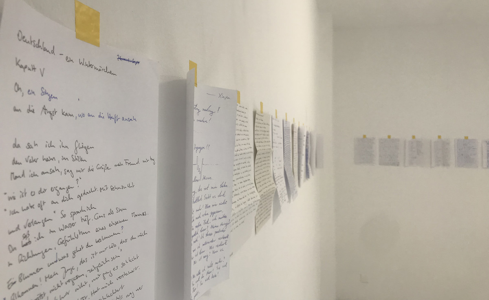
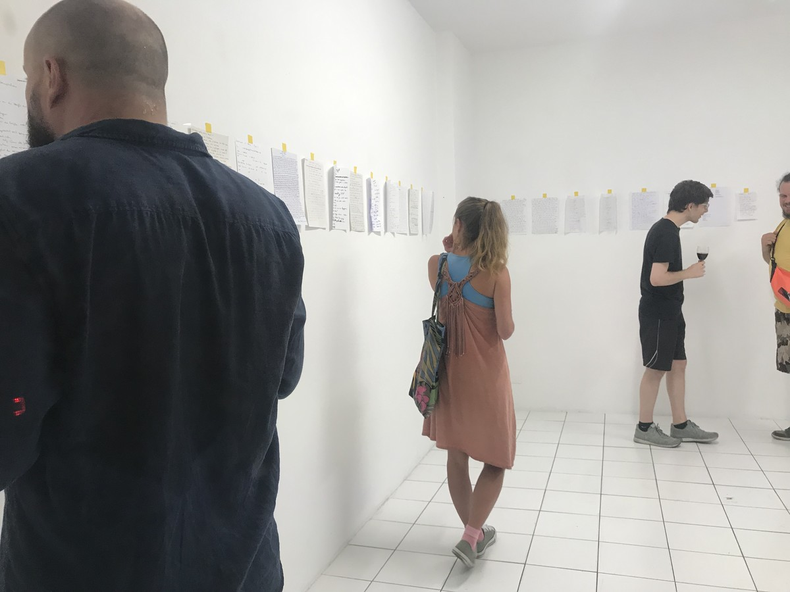
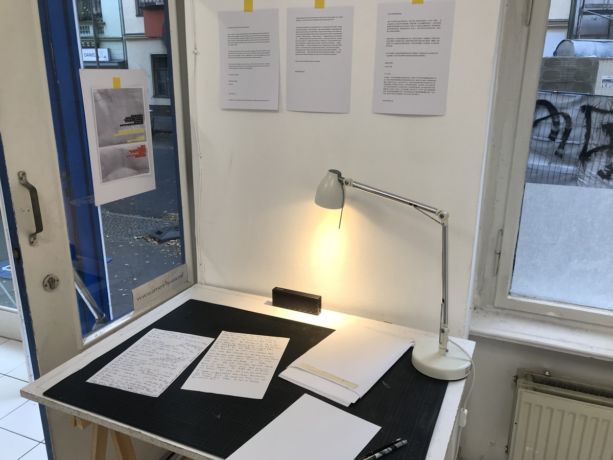
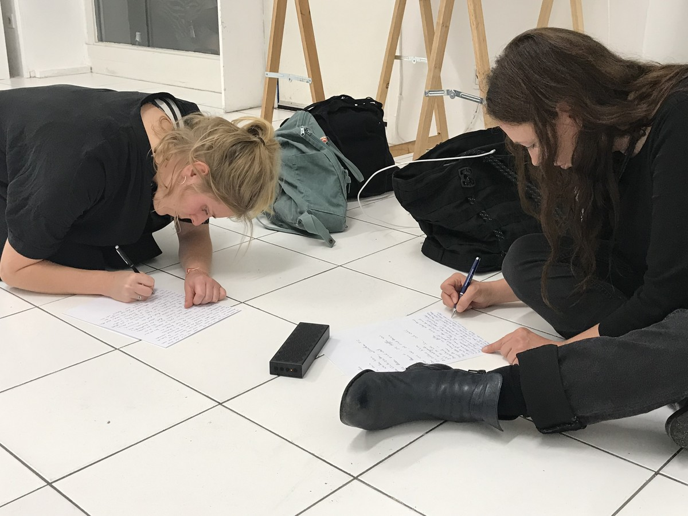

德国，一个冬天的童话 | Deutschland. Ein Wintermärchen

声音时长为6分钟，文件为21x30cm，文件数量可变，作品尺寸可变，2019
Mixed media, sound and file, sound duration is 6 minutes, file size is 21x30cm, file number is variable, work size is variable, 2019
作品想法来源于海德格尔的名言：“词语破碎处，无物存在”。艺术家随机从网上下载了一首德语诗歌(德国诗人海涅的作品《德国，一个冬天的童话》)，并用在谷歌翻译的帮助下，尝试用德语朗诵这首诗歌并录音。艺术家希望德国的观众在听到这段录音后将内容重新写在纸上作为“手稿”展出。艺术家的录音与观众的“手稿”将呈现出一种奇妙的关系。
The project in Berlin is inspired by the words of Martin Heidegger: " Where words are broken, nothing exists " ( Kein Ding ist, wo das Wort gebricht ).The artist randomly downloaded a German poem（Germany, a winter's fairy tale by German poet Heine）from the Internet and with the help of Google Translate, tried to recite the poem in German and record it. The artist hopes that the German audience will re-write the content on paper as a "manuscript" after hearing the recording. The artist's recordings and the audience's "manuscripts" will present an incredible relationship.

OMO艺术空间，柏林
OMO Art Space, Berlin

OMO艺术空间，柏林
OMO Art Space, Berlin

OMO艺术空间，柏林
OMO Art Space, Berlin